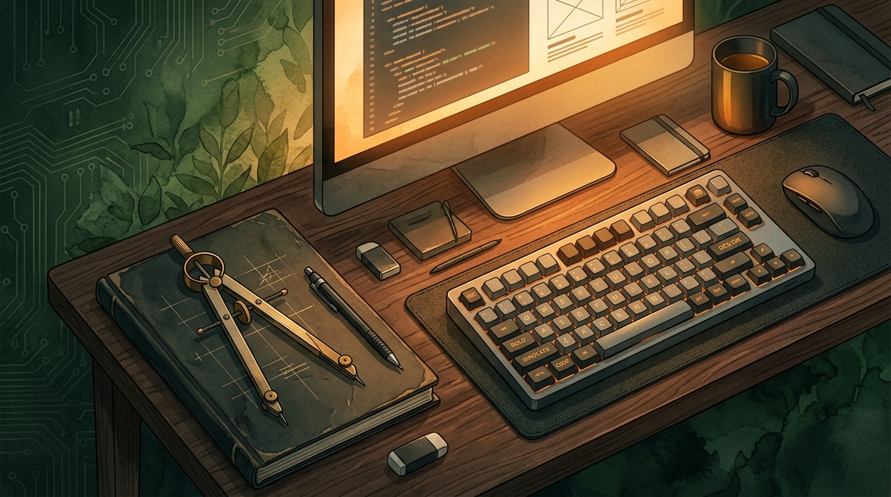
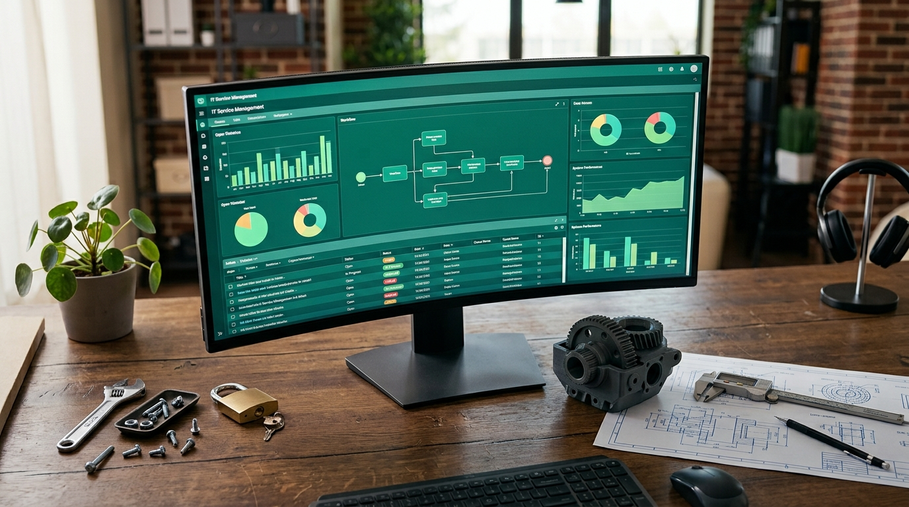
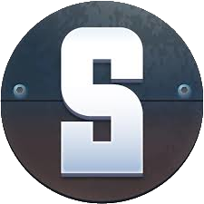
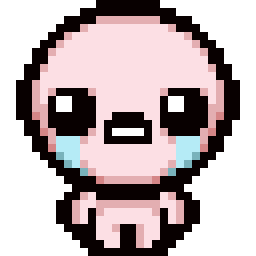
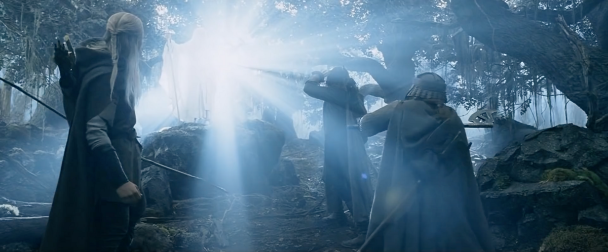
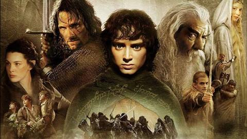
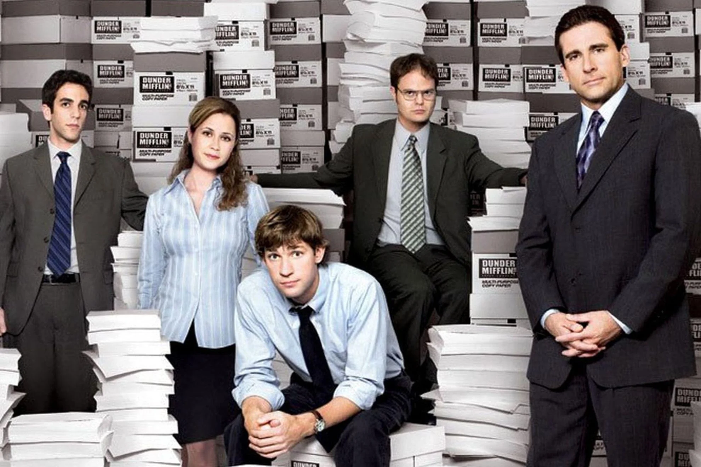
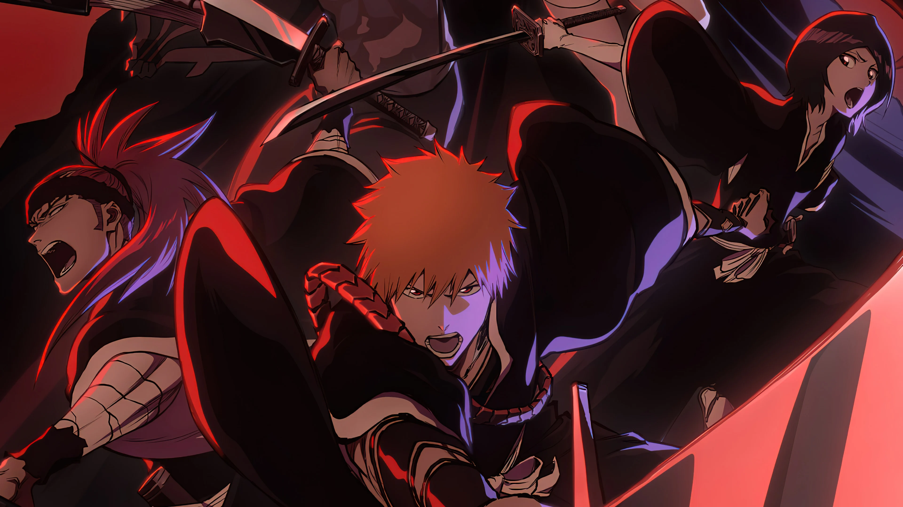
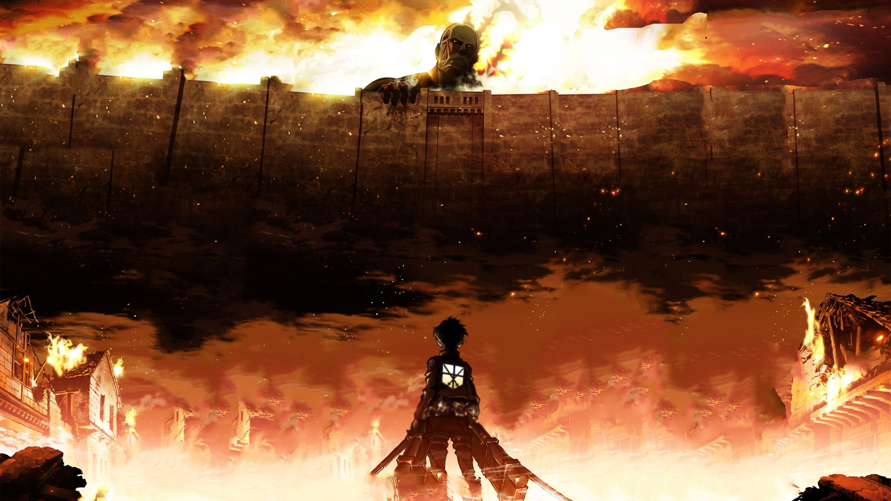

Sobre mim
Desenhador 3D de formação, com experiência em SolidWorks, Photoshop, Illustrator, AutoCAD. A par da vertente técnica e criativa, desenvolvi fortes capacidades de resolução de problemas e gestão de pressão através da experiência prática no setor das ferragens e construção.
Sempre orientado para soluções eficazes e simplificadas, sem perder o cuidado com o detalhe visual, estou agora a alargar as minhas competências para a área tecnológica com o objetivo de as integrar com o que já sei fazer.
O meu percurso na tecnologia ainda está em construção e estou a explorar diferentes áreas para perceber onde me revejo mais mas o que procuro, em qualquer uma delas, é poder criar soluções que outras pessoas possam usar de forma simples e eficaz

Educação & Formação Académica
Experiência Profissional

Programação
Competência que estou a construir de forma progressiva, começando pelos fundamentos de algoritmia e programação, passando por bases de dados e programação funcional, e encontrando-me neste momento no módulo de JavaScript.
Esta sequência tem-me permitido consolidar a lógica de programação antes de a aplicar a projetos de HTML e CSS.

Atualmente em estudo, dedicado a consolidar conhecimentos de programação funcional e interatividade, aplicados ao desenvolvimento de projetos web.
HTML & CSS
Base do desenvolvimento web que utilizo na construção de páginas, desde a marcação semântica em HTML até à estilização e ao layout responsivo em CSS. A aplicação prática de Flexbox e Grid tem permitido resolver desafios de organização e adaptabilidade, num processo de aprendizagem contínua materializado neste projeto de currículo.

Base da construção de páginas web, utilizada para organizar conteúdo de forma semântica e acessível, com aplicação prática em projetos pessoais.

Utilizado para dar forma visual e responsividade a páginas web, aplicando Flexbox e Grid na construção de layouts adaptáveis.
Competências Técnicas e Digitais
Combino uma base técnica em modelação 3D e desenho com competências emergentes em programação e sistemas empresariais.
Os valores abaixo refletem o meu nível de confiança atual em cada área em constante evolução com cada novo projeto e formação.
Hobbies & Paixões Pessoais
Fora do contexto de trabalho e estudo, gosto de dedicar tempo a interesses que me trazem bem-estar e novas perspetivas.
Motas, jogos, culinária, viagens, filmes, séries e boa música fazem parte do meu quotidiano, contribuindo para um equilíbrio saudável entre a vida pessoal e profissional, e alimentando uma curiosidade constante por coisas novas.
Motociclismo
Gosto especial por motas clássicas, tanto pelo design como pela história de cada modelo, aliado ao interesse em manter a mota em bom estado através de manutenção regular.
Culinária
Paixão por cozinhar e experimentar pratos de várias culturas, descobrindo novos sabores e formas de os preparar.
Tabuleiros & Vídeojogos
Gosto por jogos, de tabuleiro e digitais, unindo o convívio à imersão e estratégia proporcionadas.
Experiência Virtual
Jogo de tabuleiro não é sobre ter um favorito, mas sim sobre o convívio e a diversão que estes momentos trazem. Interesso-me também por D&D e Warhammer 40K, ainda que sejam universos que ainda não explorei a fundo.
No mundo dos videojogos, jogo principalmente em PC, com predileção por jogos de estratégia com foco em building e gestão, como Factorio e Satisfactory, e por roguelikes, como The Binding of Isaac e Hades. Géneros como MMORPG e FPS, representados por Guild Wars 2 e Battlefield, marcaram mais o meu passado enquanto jogador.

Factorio, jogo de construção e automação que junta estratégia e gestão de recursos. A satisfação de construir fábricas cada vez mais eficientes, resolvendo problemas de logística e produção, é o que mais me prende neste jogo.

Satisfactory, uma espécie de Factorio em 3D, com foco em automação e gestão de recursos em primeira pessoa, onde a exploração e a construção de fábricas complexas andam de mãos dadas.

The Binding of Isaac, jogo roguelike onde cada partida é diferente, graças à geração aleatória de níveis e a centenas de itens que alteram completamente a forma de jogar.
Guild Wars 2, MMORPG que joguei bastante no passado, destacando-se pela exploração de um mundo aberto e pela vertente social do jogo em conjunto com outros jogadores.
Deixo abaixo o link para o meu perfil de Steam, para quem quiser jogar comigo.
Perfil SteamFilmes & Séries
Gosto especial por fantasia, sci-fi, comédia e terror, tanto em filmes como em séries. A mistura entre histórias que estimulam a imaginação e momentos mais descontraídos torna este um dos meus hobbies favoritos para relaxar.

Histórias que me prendem
Gravito sobretudo à volta de fantasia, ficção científica, comédia e terror, tanto em filmes e séries como em animes, que também acompanho com regularidade.
Nos filmes, alguns dos meus favoritos são O Senhor dos Anéis, Interstellar, Alien, Constantine e John Wick. Nas séries, Breaking Bad e The Office ocupam um lugar especial. Já nos animes, os que mais aprecio são Bleach, Shingeki no Kyojin, Fullmetal Alchemist Brotherhood e Berserk.

O Senhor dos Anéis, trilogia que ajudou a moldar o meu interesse por fantasia, entre a riqueza do mundo criado e a profundidade das personagens.
Interstellar, referência do género de ficção científica para mim, entre a exploração espacial e uma narrativa carregada de emoção.
Alien, referência incontornável quando se junta ficção científica a terror, e um dos meus filmes favoritos nesse cruzamento de géneros.

Breaking Bad, série de referência para mim, com uma narrativa envolvente e uma transformação de personagem poucas vezes igualada.

The Office, uma das minhas séries de comédia favoritas, sempre pronta para uma boa dose de humor e personagens memoráveis.

Bleach, anime que acompanho com grande carinho, com combates marcantes e um universo sobrenatural muito bem construído.

Shingeki no Kyojin, anime que se destaca pela tensão narrativa e pela forma como vai revelando o seu universo ao longo das temporadas.
Música
Preferência clara por rock, metal e grunge, sons que me acompanham desde a adolescência e que continuam a marcar grande parte do que ouço.
Explorar o Mundo
Paixão por viajar e descobrir novos lugares, pessoas e culturas, uma forma de sair da rotina e ganhar novas perspetivas. Gosto especialmente de explorar destinos com identidade própria, onde a gastronomia, a arquitetura e os costumes locais contam uma história diferente a cada viagem.